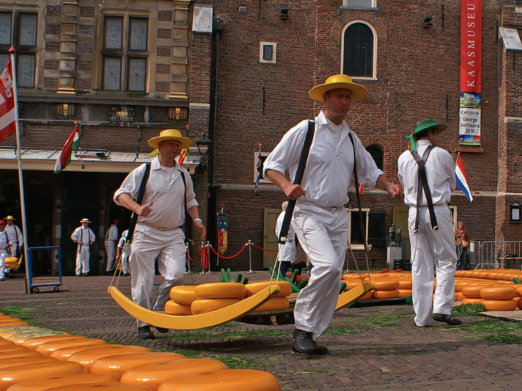
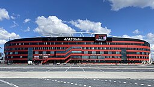

- Alkmaar staat bekend als de kaasstad.
- Het heeft een rijke geschiedenis sinds de 13e eeuw.
- De traditionele kaasmarkt is wereldberoemd.
- Alkmaar heeft meer dan 400 monumenten.
- Het is een populaire toeristische bestemming.
De Alkmaarse kaasmarkt, die al sinds 1593 plaatsvindt, is een levendig evenement dat jaarlijks duizenden bezoekers trekt. Op het Waagplein kunnen bezoekers genieten van de traditionele kaasverkoop, waarbij kaasdragers in historische kleding de kazen op een unieke manier vervoeren.
Alkmaar is de thuisbasis van AZ, een professionele voetbalclub die in 1967 werd opgericht. De club heeft verschillende nationale titels gewonnen en speelt zijn thuiswedstrijden in het AFAS Stadion, dat plaats biedt aan meer dan 17.000 toeschouwers.
